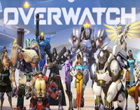

|  |
《오버워치》(영어: Overwatch)는 블리자드 엔터테인먼트가
개발하고 배급하는 다중 사용자 1인칭 슈팅 게임이
다. 2016년 5월 마이크로소프트 윈도우, 플레이스테이
션 4, 엑스박스 원으로 출시하였다.
《오버워치》에서 플레이어는 각
여섯 명으로 구성된 두 팀 중 하나에 속하며, 각 플레
이어는 특별한 능력과 기술을 가진 다수의 특정한 영웅 캐릭터 중
한 명을 선택한다. 이 영웅들은 공격, 수비, 돌격, 지원의 네 역할로 나
뉜다. 플레이어들은 함께 팀 워크를 하여 맵의 거점을 차지하기 위해 싸우거나
, 맵을 가로지르는 화물을 제한 시간 안에 배송 지점까지 호위한다. 플레이어들은
경기를 계속 플레이하면 캐릭터 스킨과 승리 포즈와 같이 게임플레이에 영향을 주지
않는 외관 보상을 얻는다. 블리자드가 출시 한 달 후 경쟁전 플레이를 추가했지만, 이
게임은 근본적으로 캐주얼 플레이를 지향한다. 블리자드는 모든 《오버워치》 업데이트는
무료로 진행될 것이며, 플레이어가 부가 요금을 내는 경우는 오직 추가적인 외관 보상을 구
입할 때 이라고 발표했다.
《오버워치》는 블리자드의 네 번째 프랜차이즈로, 2014년
다중 접속 온라인 롤플레잉 게임 타이탄의 개발이 취소되면서 만
들어졌다. 타이탄 팀의 일부는 팀 포트리스 2와 같은 팀 기반의 1인칭 슈팅과 멀티
플레이어 온라인 배틀 아레나의 높아지는 인기, 팀워크를 강조하는 영웅 기반의 슈터 창
작을 기반으로 《오버워치》의 컨셉을 구상하였다. 《오버워치》의 일부 요소들은 취소된 타
이탄 프로젝트의 설정과 구상들을 빌려왔다. 세계적 위기 이후 가까운 미래의 낙관적인 지구
설정의 이야기를 정립시킨 이후, 개발자들은 이 설정의 일부로 폭넓은 성별과 인종을 가진 다
양한 영웅을 제작하는 것을 목표로 하였다. 캐릭터 간의 밸런스를 조정하는 것에 많은 시간을
할애하여, 새로운 플레이어가 계속해서 재미를 느낄 수 있도록 만든 한편, 숙련된 플레이어
는 비슷한 실력을 가진 플레이어에게 힘겨운 도전을 할 수 있도록 하였다.
《오버워치》는 2014년 블리즈컨에서 완전히 플레이 가능한 상
태로 공개되었으며, 2015년 후반부터 2016년 초반까지 클로즈 베
타를 진행했다. 2016년 5월 오픈 베타에는 970만 명 이상의 플레이어가
참여하였다. 게임의 출시는 줄거리와 각 캐릭터를 소개하는 단편 애니메
이션 영상을 통해 홍보하였다. 공식 출시 이후, 《오버워치》는 비평가들로부
터 전반적인 호평을 받았으며, 특히 게임의 접근성과 재미있는 게임플레이에서 좋은 점수를 받았다.
제품명 : 오버워치
가격 : 45000
|